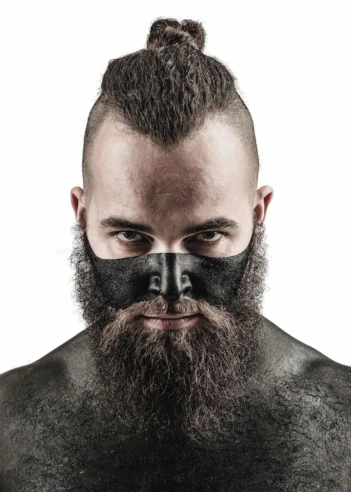
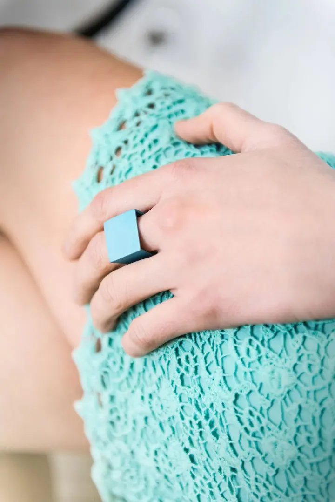
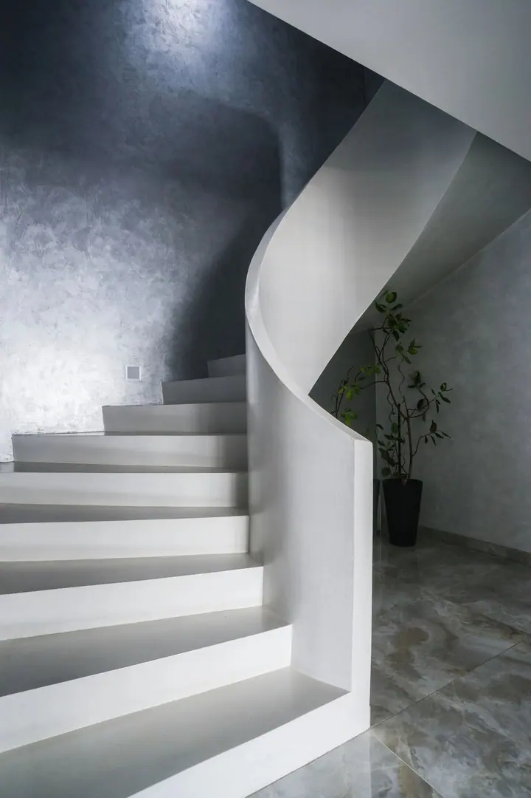

01 / 04
Svatební fotografie
Na schůzce předem probereme detaily a vaši představu o svatebním dni. Pak se budu snažit ji naplnit a svou práci odvést co nejlépe. Svatební focení začíná na 9 000 Kč.
Zeptat se na termín→




Svatby, portréty i interiéry z Příbrami
Zeptat se na termín →(01) Ahoj
Jmenuji se Martin Zoubek a jsem fotograf z Příbrami. Fotím svatby , portréty i produkty a interiéry , protože mám rád pestrost a změnu. Fotografie je moje hlavní profese, živí mě a pořád mi dělá radost.
(02) Co fotím
01 / 04
Na schůzce předem probereme detaily a vaši představu o svatebním dni. Pak se budu snažit ji naplnit a svou práci odvést co nejlépe. Svatební focení začíná na 9 000 Kč.
Zeptat se na termín→02 / 04
Fotím lidi v ateliéru i venku v ulicích. Portrétní focení začíná na 2 500 Kč.
Zeptat se na termín→03 / 04
Fotím produkty, jídlo i řemeslo při práci tak, aby dobře vypadaly na webu i na sociálních sítích.
Zeptat se na termín→Dále nabízím
Fotím interiéry domů, bytů i restaurací pro prodej, pronájem nebo prezentaci. Realitní focení začíná na 2 000 Kč.
↗(04) Postup
Od první zprávy po hotovou galerii.
Krok 1 z 4
Napište mi nebo zavolejte. Rád vám dám základní informace a domluvíme si schůzku.
Krok 2 z 4
Probereme detaily focení i vaši představu a vzájemně se poznáme. Vyberete si službu, která vám sedí.
Krok 3 z 4
Užijte si focení. Budu se snažit naplnit vaše představy a svou práci odvést co nejlépe.
Krok 4 z 4
Na úpravu fotek si nechávám 2 až 6 týdnů podle náročnosti nebo podle naší domluvy. Dostanete je v plné kvalitě a ve zmenšené verzi pro web a sociální sítě.
Jeden den ateliér, druhý den rockový koncert.
(05) Za objektivem
Jsem v první řadě táta, mám úžasné syny a skvělou ženu. S fotkou jsem začal už jako malý kluk s ruským kinofilmovým přístrojem Směna a fotil všechno kolem našeho vesnického domu. Později přišla zrcadlovka a černobílé fotky, které jsem zvětšoval v koupelně.
Začátkem milénia jsem pracoval v prodejně fotoaparátů, kde jsem objevil digitální fotku a poprvé si vyzkoušel ateliér. Během tříletého pobytu v USA jsem fotil s Nikonem D70. Kolem roku 2012 jsem se k focení vrátil naplno a už u něj zůstal. Být na volné noze není vždy jednoduché, ale ta svoboda za to stojí.
Jsem jachtař a tulák a baví mě být v pohybu. Cestoval jsem po zemi až do Indie a projel jsem Indonésii, Aljašku, Mexiko, Maroko a téměř celou Evropu. Dnes žiju s rodinou v Příbrami a ve volné tvorbě mě nejvíc baví krajina: sbalím foťák a stativ, vyrazím ven a čekám, co přijde.
Martin
Martin Zoubek · Svatební a portrétní fotograf
Svatební focení začíná na 9 000 Kč. Přesnou cenu domluvíme na schůzce podle toho, co od focení čekáte.
Na úpravu si nechávám 2 až 6 týdnů. Záleží na náročnosti zakázky a na tom, jak se domluvíme.
Dostanete pečlivě zpracované fotky v plné kvalitě a k tomu zmenšenou verzi pro web a sociální sítě.
Ano. Fotím portréty od 2 500 Kč, interiéry a reality od 2 000 Kč a také produkty. Pestrost mě na téhle práci baví nejvíc.
(07) Kontakt
Napište pár vět o tom, co si představujete, a termín, který se vám hodí.